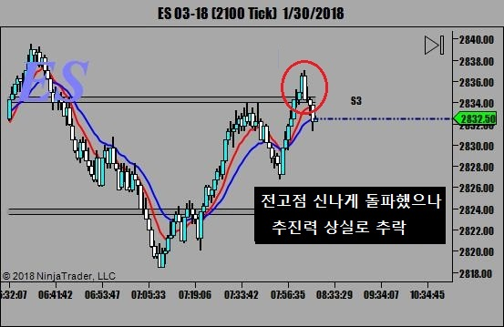
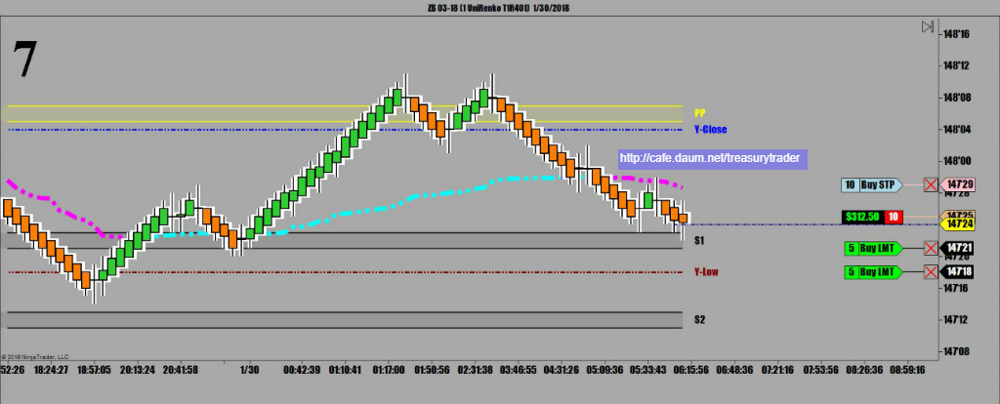
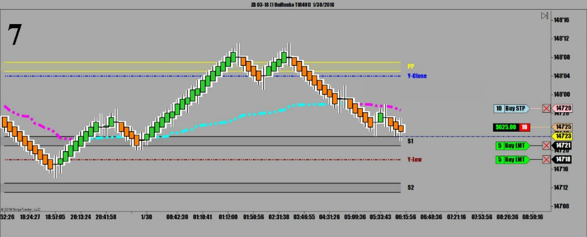
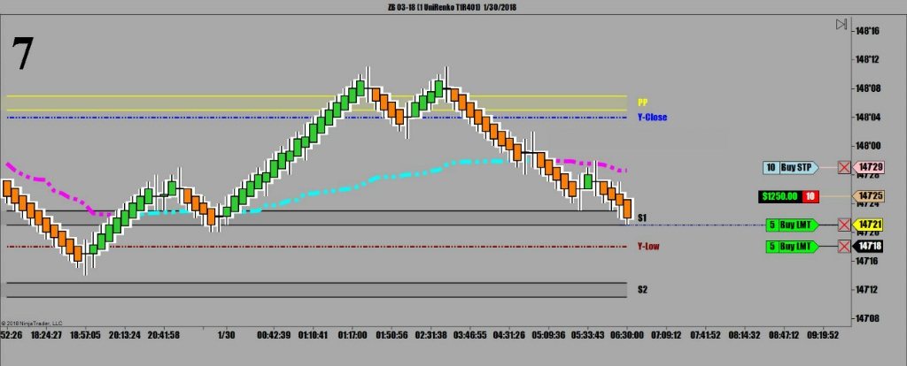
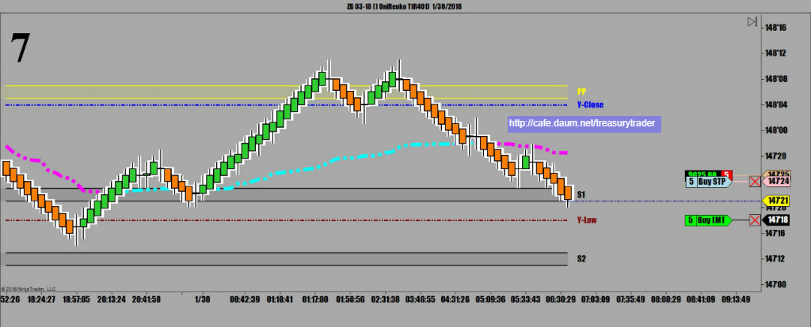
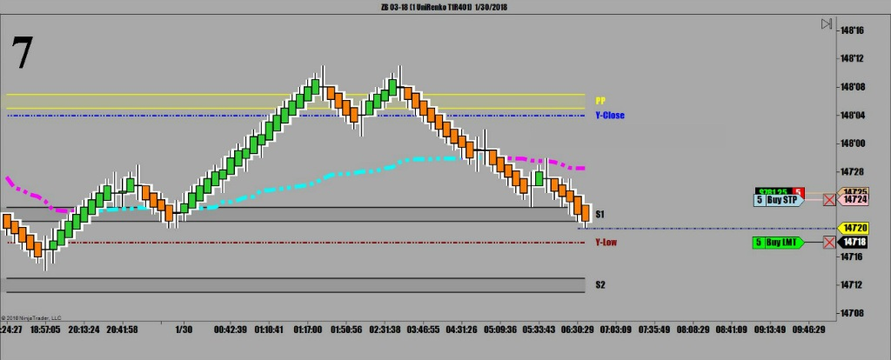
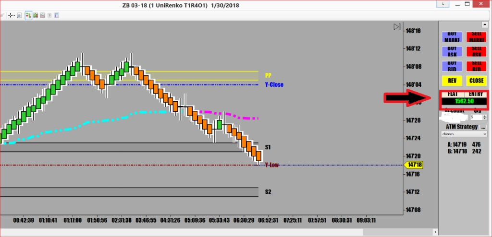

오늘 다우는 떡락중
카페 금주시황에서 분석했던것처럼
Bump and Run에서 조정을 받는 중. 다우는 이시각 400 인트가 하락중
어제 장외마켓 오픈하자마자 폭락했던 국채선물은 밤새 조금 반등에 성공했지만
지금은 확실한 하락추세 진행중이라 결국 장중에 하락으로 돌아섬
새벽4시 매매시작
별로 좋은 매매신호가 없어서 6시까지 기다리다 결국 Descent Triangle이 떳음

여러가지 돌파패턴중에서 그나마 가장 성공확률이 높은것이 Descent / Ascent Triangle임
그 이유는 어느 한 지점에서 더이상 나아가지 못하면서 물량이 많이 쌓이고
쌍바닥 세바닥인줄 알고 매수로 진입했던 사람들이 손절오더를 잔뜩 걸어놨기 때문에
반대로 돌파되는 순간 모든 손절주문이 방아쇠가 당겨지고
그 덕분에 날아가는거임. 다른 패턴은 그렇게 물량이 잘 쌓이지 않기 때문에
손절폭탄 추진력이 없어서 돌파가 잘 안먹힘.
거기에 대한 좋은 예로 오늘 S&P 500(ES) 의 돌파시도

지켜보다가 삼각형 꼭지위로 조금 올라올 때 마켓오더로 받았는데 순식간에 2틱 올라와서 쫌 쫄았었음..ㅋ
매매원칙상 음봉 떠야 진입하는데 패턴보고 너무 광분했다가 ..ㅋ

그후로는 순항



1차 수익실현 후 손절주문 앞으로 전진배치


매매요약
피봇 지지선에서 믿을만한 Descent Triangle이 나옴 -- 매도진입
오늘의 수익 1562불 50전.
